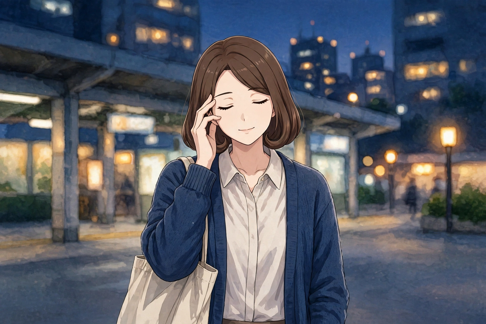

梅田で仕事帰りに気になる頭の重さ｜夕方に重だるく感じる日の過ごし方とセルフケア、受診の目安ハウツー

梅田で働く・暮らす方へ。仕事を終えた夕方、帰り道や帰宅後に「頭全体が締め付けられるように重い」「頭がぼんやりして、考えがまとまりにくい」「朝は平気だったのに、仕事帰りになると頭まわりが重だるい」と感じる頭の重さについて、一般的な解説と考えられる要因の整理、夕方に重だるく感じる日の過ごし方とセルフケア、医療機関への受診の目安をまとめました。一般的な健康情報としてお読みください。
#梅田 仕事帰り 頭の重さ#仕事帰り 頭 重い 夕方#頭の重さ セルフケア 仕事帰り#梅田 女性専用 サロン 頭の重さ#夕方 頭 重だるい ケア
仕事帰りに気になる頭の重さとは・感じやすい場面
頭の重さとは、病名ではなく、「頭全体が締め付けられるように重く感じる」「帽子をかぶったままのような圧迫感が抜けない」「頭がぼんやりして、考えがまとまりにくい」といった感覚を表す言葉として使われることがあります。朝の通勤時は平気だったのに、仕事を終える夕方になって頭まわりの重さに気づく、帰りの電車の中で「今日は頭が重だるい」と感じる、帰宅して荷物を下ろしたときにどっと重さが押し寄せる——そんな訴えは、働く女性からよく聞かれます。梅田では、オフィスから駅まで地下街や商業施設を歩いて移動する方も多く、仕事帰りの人波の中で頭の重さに気づく方もいます。感じ方には個人差が大きく、デスクワーク中心の日と外回りや立ち仕事の日、会議が続いた日と落ち着いた日でも変わるとされます。
大切なのは、「朝の自分と比べてどうか」「どんな日の夕方に気になりやすいか」という視点です。画面作業が長かった日なのか、眠りが浅かった日の翌日なのか、人と話し続けた日なのか、帰り道に荷物が多かった日なのか——気になりやすい場面を簡単に振り返っておくと、自分の傾向がつかみやすくなります。この記事では、仕事帰りに気になる頭の重さの一般的な解説と、背景として考えられる要因の整理からお伝えします。なお、頭の重さの感じ方だけで体の状態を判断することはできません。気になる変化が続く場合は、後半の「受診の目安」もあわせてご確認ください。
考えられる要因の整理
1つ目は、一日の姿勢と、首・肩まわりのこわばりです。頭は首や肩の筋肉に支えられており、デスクワークで画面を見続ける姿勢や、うつむいて資料やスマホを見る姿勢が続くと、首・肩まわりの緊張が積み重なりやすいとされます。その緊張が、夕方になって頭全体の締め付け感や重さとして感じられる背景のひとつと考えられます。立ち仕事や接客の多い日も、夕方には姿勢を支える負担が重なり、頭まわりまで重く感じられることがあるとされます。ただし、感じ方には個人差があり、「姿勢だけが原因」と決めつけられるものではありません。
2つ目は、目や画面の負担と、気を張り続ける一日との関わりです。会議や締め切り、人とのやり取りが続いた日は、体を大きく動かしていなくても、仕事が終わる頃に頭の重さを強く感じることがあるとされます。画面を見続ける時間が長い日は、目の疲れ感や首・肩のこわばりと一緒に頭まわりが気になりやすい、という声も聞かれます。仕事が終わっても頭の切り替えがうまくいかず、帰宅後も緊張が抜けにくいと感じる方もいます。
3つ目は、睡眠や食事、水分、帰り道の環境との関わりです。眠りが浅い日や就寝時刻がずれる日が重なる、昼食が軽かった、夕方まで水分が少なかった、といった日常の要素が重なると、仕事帰りの頭の重さを感じやすいことがあるとされます。梅田の帰り道では、冷えた外気と暖かい地下街や電車内を行き来することも多く、そうした環境の変化と一緒に頭まわりが気になる、という方もいます。東洋医学では、頭部は多くの経絡が集まる部位とされ、体の側面からこめかみへ至る胆経や、耳のまわりを巡る三焦経、頭の後ろ側から背中へ流れる膀胱経のエリアと重ねて考えられてきた歴史があり、頭の重さの背景を「気・血の巡り」と結びつけて捉えることもあります。要因はひとつではなく、その日の働き方や過ごし方によって組み合わせが変わるため、思い当たるものをひとつずつ見直すことが大切です。
日常で取り入れられるセルフケア
まずは「帰る前に、同じ姿勢を区切る小さな動きを入れる」ことです。退勤前に席を立って少し歩く、首をゆっくり左右に倒す、肩をゆっくり大きく回す、両手を組んで胸を開くように伸ばすといった小さな動きは、仕事終わりの切り替えとして取り入れやすい方法です。画面を見続けた日は、帰る前に視線を遠くへ移して目を休める区切りも作ってみてください。帰り道でひと駅分歩く、階段を使うといった日常の歩行も、無理のない範囲であれば取り入れやすいものです。痛みを感じるほど強く伸ばしたり、勢いよく回したりする必要はありません。
次に「帰宅後に温めて、頭まわりをいたわる」ことです。帰宅後に湯船につかって首・肩まで温める、蒸しタオルを首の付け根に当てる、といった方法は、冷えてこわばった部位をいたわる基本とされます。指の腹で頭皮そのものをゆっくり動かすケアや、こめかみを指の腹でやさしく押すケアも、手軽に取り入れられる方法のひとつです。帰宅後すぐに家事や画面に戻らず、照明を少し落として静かに座る時間を数分作ることも、夕方の過ごし方の工夫として挙げられます。貼るタイプの温熱用品を使う場合は、低温やけどに十分注意し、使い方の表示を確認してください。
あわせて、水分をこまめに取ること、夕食を抜いたまま夜更かししないこと、眠る前の画面時間を区切る、就寝時刻を大きくずらさないなど、夜のリズムを整えることも大切とされます。ただし、セルフケアはあくまで日常の頭の重さへの対処です。特定の方法に頼りすぎたり、気になる状態を我慢して様子を見続けたりしないようにしてください。頭の重さが強い日は、ケアよりもまず休むことを優先することも大切です。
受診の目安｜こんなときは医療機関へ
仕事帰りの頭の重さの多くは、姿勢や目・画面の負担、睡眠や食事といった日常の要素が重なって感じられるとされますが、中には医療機関での確認を優先したいサインもあります。「今までにないほど突然強く痛む」「手足のしびれや動かしにくさ、ろれつの回りにくさを伴う」「発熱や嘔吐を伴う」「頭をぶつけたあとから重さや痛みが出てきた」「重さや痛みの頻度・強さが少しずつ増えている」「これまでと重さの感じ方や気になる場所のパターンが変わってきた」「仕事帰りだけでなく、朝から重さが続く日が増えてきた」「日常生活や仕事に支障が出るほどつらい状態が続いている」といった場合は、セルフケアで様子を見続けず、脳神経外科や頭痛外来、かかりつけの医療機関への受診をおすすめします。
また、頭の重さの背景には、検査で初めて分かる要素が関係していることもあるため、気になる状態が続く場合は一度相談してみてください。当店のケアはリラクゼーションを目的としたボディケアで、頭の重さや病気を診断したり、それらに対応したりするものではありません。医療機関での確認を優先したうえで、日常のコンディションを整える選択肢のひとつとしてご利用ください。
当店でのケアとサロンのご案内
ステラポラリスは、大阪・梅田エリアのレンタルサロンで施術する女性専用・完全予約制のサロンです。営業は月〜土17:00〜22:00（日曜休み）で、仕事帰りの時間帯にも合わせやすい設定です。施術はオイルマッサージと美容整体、料金は90分10,000円です。ご予約はLINE公式アカウント「ポラリス美容整体院」で受付中です。場所は大阪市北区堂山町12-5 ロイヤルハイツ梅田Ⅱ 303号室（レンタルサロンACE内）、中崎町駅から徒歩5分・阪急梅田駅から徒歩8分です。入室方法の詳細はご予約確定後にLINEでご案内します。
施術では、その日の体調や気になる部位をうかがい、頭部だけでなく、その土台となる首・肩・肩甲骨まわりや背中までを順にほぐしながら、巡りを意識したケアを組み立てます。美容整体では、姿勢の土台となる骨盤まわりや、胸を開くケアを組み合わせることもできますので、ご希望があればお伝えください。仕事帰りに頭まわりが重く感じられる日は、静かに休む時間を大切にする進め方も選べますので、遠慮なくお伝えください。担当は施術歴30年・鍼灸師資格を持つセラピスト1名で、当店では鍼灸施術は行いません。関連するお悩みページ「頭の重さ」や、関連記事「梅田で雨の日に気になる頭の重さ」でも、体の見方やケアの考え方を紹介していますので、あわせてご覧ください。料金や営業時間の詳細は、メニュー・料金ページでもご確認いただけます。